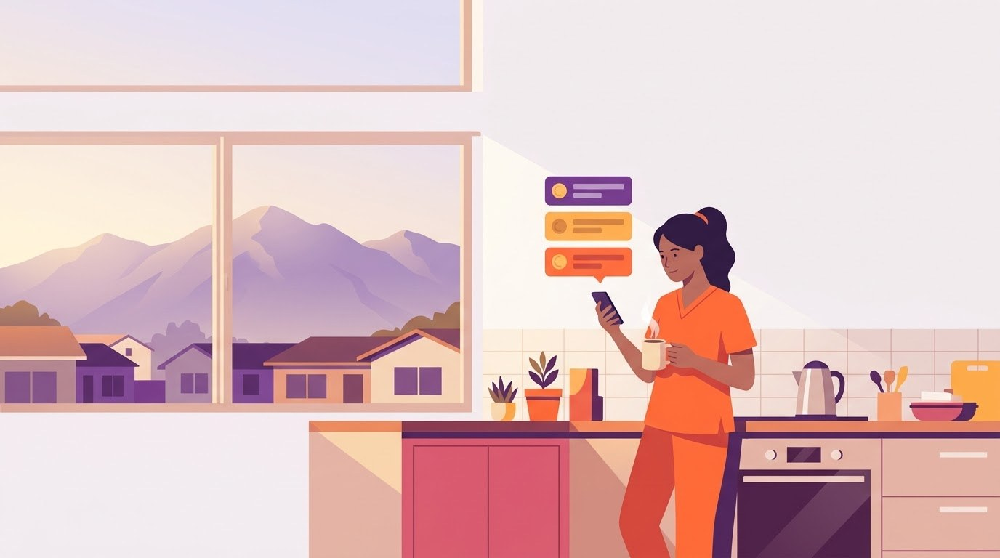
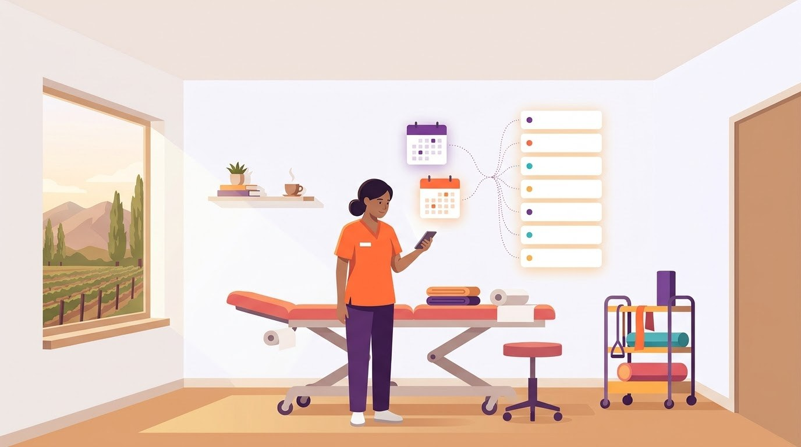
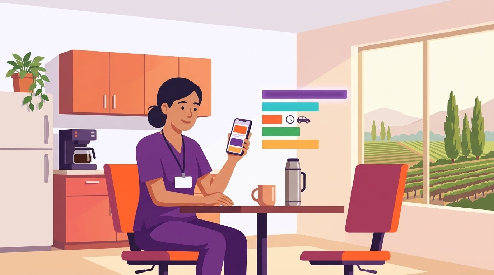
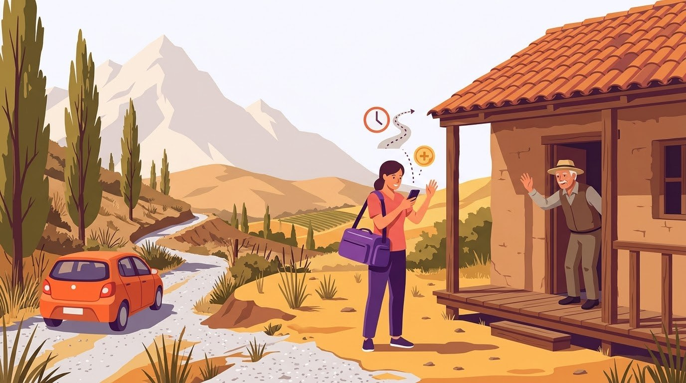
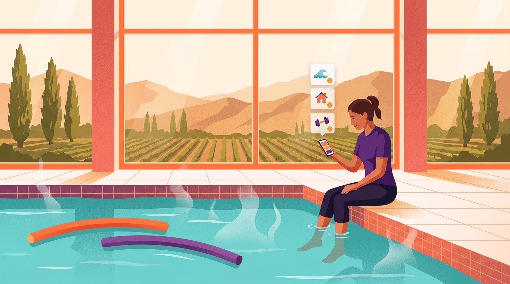
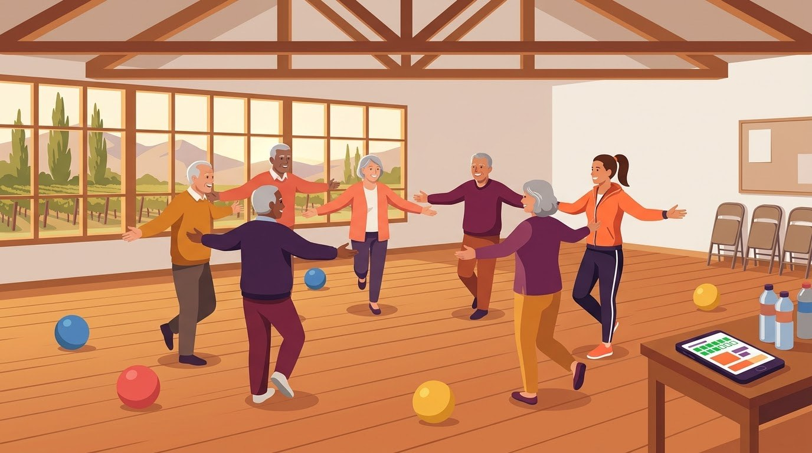

Innovación y Emprendimiento III · FGIE03 · INACAP Rancagua
EVALUACIÓN N°3 PROTOTIPADO Y TESTEO
COPILOTO KINE · CASO JOSELYN TOLEDO
Del storyboard al prototipo v3: dos ciclos internos, la validación con la clienta y Sercotec, y la iteración que trabaja como ella trabaja.
Francisco Ahumada · Claudia Cifuentes · Néstor Rivera · Benjamín Vera Yáñez PROFESOR: ROBERTO ESCOBAR DONOSO · DISEÑO DIGITAL · NOVIEMBRE 2026
Copiloto Kine · EV3 Prototipado y testeo · INACAP Rancagua01
Qué presentamos
Agenda y criterios de evaluación
CRITERIO 3.1.1
15 pts
Fase de desarrollo y prototipado
SQA · storyboard · mock-up · fichas · CDM
CRITERIO 3.1.2
20 pts
Prototipo validado en más de un ciclo, sostenible
4 ciclos: 2 internos, 1 con la clienta, 1 con usuarias
CRITERIO 3.1.3
15 pts
Ajusta el prototipo con fundamento
v1 → v2 → v3 · 24 cambios trazados
CRITERIO 3.1.4
20 pts
Estado del arte y tendencias
PESTAL profundizada · antecedentes · 4 propuestas
CRITERIO 3.1.5
30 pts
Pertinencia de la propuesta de valor
Propuesta v3 · costo · pertinencia
01 Caso, prototipos y ruta
02 Prototipo v1 y ciclo 1
03 Iteración v2 y ciclo 2
04 Ciclo 3 · la clienta prueba la propuesta
05 Iteración v3
06 Ciclo 4 · usuarias y pacientes
07 Costo y propuesta de valor v3
08 Estado del arte, pertinencia y sostenibilidad
Copiloto Kine · EV3 Prototipado y testeo · INACAP RancaguaRúbrica ES03 · 02
Caso y punto de partida
Josselyn, cuatro lugares de trabajo y ninguna herramienta que los cruce
Usuaria
Josselyn Toledo, kinesióloga y psicomotricista acuática. Atiende en el Centro Médico InMotion (factura mensual), a domicilio en San Fernando y la precordillera, en piscina temperada y en su gimnasio. Anota todo cada noche en el teléfono.
Desafío (UA1)
¿Cómo podríamos aumentar la visibilidad financiera de kinesiólogas independientes con atención mixta, conectando su agenda con sus ingresos y costos, para reducir a la mitad el tiempo de registro manual (de ~1 h a menos de 30 min diarios) en Rancagua durante 2027?
Propuesta de valor de partida (EV2)
Copiloto Kine es el copiloto financiero de la kinesióloga independiente: se conecta a la agenda que ya usa y convierte cada atención en ganancia real —descontando traslado, materiales, comisión e impuestos— para que sepa cuánto gana, anticipe los meses bajos y deje de cuadrar Excel de noche.
Prototipos navegables · ábrelos en el celular
Vista profesional (v3)
La app de Josselyn: ganancia real y por hora, ruta, agenda, proyección y Mi plata.
https://copiloto-kine.vercel.app/profesional/
Vista cliente (paciente)
Los mensajes que recibe el paciente, simples para personas mayores.
https://copiloto-kine.vercel.app/cliente/
Datos de ejemplo. Los prototipos no envían mensajes ni guardan datos fuera del dispositivo.
Copiloto Kine · EV3 Prototipado y testeo · INACAP RancaguaContexto · 03
S13 · Ciclo 3Clienta, Sercotec y docentes (12/11).
S14 · Iterar v312 cambios del ciclo 3.
S15 · Ciclo 4Josselyn y Catalina con la v3.
Ciclo 1 · funcional y estético
¿Lo usa sin ayuda? ¿Se lee y se toca bien? Tareas, WCAG 2.1 AA, objetivos táctiles y heurísticas de Nielsen.
Ciclo 2 · técnico
¿Calcula exacto y resuelve sus necesidades puntuales? Pruebas contra una hoja de referencia, persistencia, privacidad y brechas.
Ciclo 3 · con la clienta
¿Calza con su rutina real? Reunión del 12/11: 12 hallazgos que originan la v3.
Ciclo 4 · usuarias
¿Lo usa en su celular y le ayuda a decidir? Tareas N1–N10, SUS y precio. Pendiente
Transparencia. Los ciclos 1 y 2 los ejecutó el equipo como usuarios internos, con scripts reproducibles. El ciclo 3 usa la transcripción de la reunión real. No inventamos respuestas de personas que aún no participan.
Copiloto Kine · EV3 Prototipado y testeo · INACAP Rancagua3.1.1 · 3.1.2 · 04
3.1.1.1 · Evaluación diagnóstica
3.1.1.1Tabla SQA
S · Lo que sabemos
Prototipar es materializar la idea para probarla antes de invertir (UA3 de Innovación y Emprendimiento II).
Un storyboard muestra la experiencia en el tiempo; un mock-up la materializa en forma.
Nuestra propuesta de valor, atributos y requerimientos ya están definidos (EV2).
Como estudiantes de Diseño Digital, prototipamos en Figma y en HTML.
Q · Lo que queremos saber
¿Cómo testear una herramienta financiera sin datos reales de la usuaria?
¿Qué indicadores muestran que el prototipo funciona y no solo que “gusta”?
¿Cómo pasar de un testeo funcional a uno técnico en la iteración?
¿Qué tan distinta es la propuesta frente a lo que ya existe en 2026?
A · Lo que aprendimos
Un recorrido de tareas con indicadores medibles (éxito, toques, contraste) da evidencia más sólida que la opinión.
Testear al interior del equipo es válido para depurar; la validación final necesita a la usuaria.
Cada ciclo debe tener un foco distinto: primero uso y estética; luego exactitud, privacidad y brechas técnicas.
La ruta del día, que no estaba en el foco original, aporta tanto valor como el tablero financiero.
Copiloto Kine · EV3 Prototipado y testeo · INACAP Rancagua3.1.1 · 05
3.1.2.1 · Storyboard con propuesta de valor
3.1.2.1Un día de Josselyn con Copiloto Kine
Escena 1
23:10 · el Excel de noche
Después de atender, Josselyn cuadra ingresos y gastos. Le toma cerca de una hora y no sabe si el mes va bien.
ProductoSituación actual: registro manual, sin proyección (UA1).
Propuesta de valorNecesidad: saber cuánto gana sin trabajo nocturno.
Escena 2
9:45 · entre pacientes, en la clínica
Abre el tablero: ganancia real del mes, porcentaje de la meta y semáforo, sin tocar nada.
ProductoTablero con ganancia real y semáforo.
Propuesta de valorAtributo “Legible de un vistazo”.

Escena 3
8:00 · la agenda llega sola
Cada cita del día aparece como ingreso proyectado, etiquetada como clínica o domicilio.
ProductoAgenda conectada (simulada en v1).
Propuesta de valorAtributo “Automático”: no se vuelve a digitar.
Escena 4
12:30 · “atención realizada”
Al despedirse de don Luis confirma la atención con un toque y ve su ganancia neta.
ProductoRegistro de un toque con desglose.
Propuesta de valorGanancia real: traslado, materiales y retención ya descontados.
Escena 5
13:10 · ruta y “voy en camino”
La ruta ordena los domicilios y con un toque avisa al siguiente paciente que va llegando.
ProductoRuta del día y aviso al paciente.
Propuesta de valorAtributos “Sostenible” y “Cercano”.
Escena 6
Domingo · lo que viene
Ve que febrero viene bajo, pero todavía arma a mano lo que le entrega a la contadora.
ProductoProyección a 3 meses.
Propuesta de valor“Anticipador”; queda abierto el cierre con la contadora.
Copiloto Kine · EV3 Prototipado y testeo · INACAP Rancagua3.1.1 · 3.1.5 · 06
3.1.2.2 · Mock-up con propuesta de valor
3.1.2.2Prototipo v1 navegable en el celular
TableroGanancia real del mes, meta, semáforo, colchón, ruta en miniatura y alerta de meses bajos. Legible de un vistazo · AnticipadorRutaMapa con paradas numeradas, km, minutos, costo y botón “Voy en camino”. Sostenible · CercanoAgendaCitas de clínica y domicilio; un toque registra la atención. AutomáticoGananciaDesglose: valor, comisión, traslado, materiales y retención. Legible · AutomáticoProyecciónGanancia proyectada a 3 meses y acciones que cierran la brecha. AnticipadorDestinosSeparación en ganancia, impuestos y colchón; costos configurados. Sostenible
HTML autocontenido (390 px), sin instalación: se abre desde un enlace en el celular. Paleta clara del proyecto con acentos naranjos; clínica en morado y domicilio en naranjo.
Copiloto Kine · EV3 Prototipado y testeo · INACAP Rancagua3.1.2 · 07
3.1.2.3 · Ciclo 1 · ficha y resultados
3.1.2.3Funciona en lo central; falla en corregir y en accesibilidad
Evaluar si el prototipo v1 permite a una kinesióloga independiente completar sus tareas diarias de registro, ruta y control financiero sin ayuda, y si su estética es clara, accesible y coherente con la metáfora.
7/11
tareas sin ayuda (meta ≥ 90 %)
11
errores de contraste WCAG AA
7
botones bajo 44 px
10–11 px
letra mínima en etiquetas
Tareas que fallaron
#
Tarea
Evidencia
T4
Corregir una atención marcada por error
No existe opción para deshacer o editar la atención
T9
Cambiar el costo por km o la comisión de la clínica
Los costos se muestran pero no se pueden editar
T10
Marcar que un paciente no asistió
No existe estado de inasistencia o cancelación
T11
Preparar la información del mes para la contadora
No existe exportación para la contadora
Heurísticas con severidad ≥ 2
Heurística
Hallazgo
Sev.
H2 Relación con el mundo real
“Destinos” no se entiende; “ganancia real” no está definida.
2
H3 Control y libertad
No se puede deshacer una atención marcada por error.
3
H5 Prevención de errores
Sin opción “no asistió”: una inasistencia sumaría un ingreso falso.
3
H7 Flexibilidad
Los costos (km, comisión, retención) no se pueden ajustar.
3
H9 Recuperarse de errores
Sin camino para corregir una cifra mal registrada.
2
Copiloto Kine · EV3 Prototipado y testeo · INACAP Rancagua3.1.2 · 08
3.1.3.1 · Iteración v2 · metáfora y ajustes
3.1.3.1Del tablero al copiloto, y 12 cambios medidos
Antes (EV2)
“Copiloto Kine es como el tablero y el copiloto de un auto de rally.”
Después (v2)
“Copiloto Kine es como el copiloto de un rally: lee la ruta, canta los tiempos y lleva las cuentas mientras ella maneja.”
En el ciclo 1 la ruta del día fue la vista con más valor percibido y la que mejor encarna la idea de “copiloto”, mientras el tablero funcionó mejor en tamaño reducido. La metáfora deja de centrarse en el instrumento (el tablero) y pasa a centrarse en el acompañante que lee la ruta y lleva la libreta.
AnticipadorClaroAutomático y corregibleSostenible
11/11
tareas en v2
0
errores AA
#
Cambio en v2
Hallazgo del ciclo 1
1
Deshacer una atención
T4 fallida · H3 severidad 3
2
Estado “No asistió” sin ingreso
T10 fallida · H5 severidad 3
3
Costos editables (comisión, km, retención)
T9 fallida · H7 severidad 3
4
Exportación CSV para la contadora, sin datos clínicos
T11 fallida
5
Naranja accesible en botones (#C2410C) y verde oscuro en estados
11 errores de contraste
6
Botones y enlaces de 44 px o más
7 objetivos táctiles chicos
7
Letra mínima de 12 px
Textos de 10–11 px
8
Definición de “ganancia real” en el tablero
H2 severidad 2
9
Diferencia de km visible en ambos modos de ruta
T6: ahorro oculto
10
Valores en las barras de la proyección
H10 severidad 1
11
Texto del mensaje “voy en camino” visible
Debilidad de propuesta de valor
12
“Destinos” pasa a llamarse “Mi plata”
H2 severidad 2
Copiloto Kine · EV3 Prototipado y testeo · INACAP Rancagua3.1.3 · 09
3.1.3.3 · Mock-up iterado
3.1.3.3Versión 1 → versión 2
v1
→
v2
Tablero“Ganancia real” definida; letra ≥ 12 px
v1
→
v2
AgendaDeshacer y “No asistió”; botones accesibles
v1
→
v2
“Destinos” → “Mi plata”Costos editables y exportación
Copiloto Kine · EV3 Prototipado y testeo · INACAP Rancagua3.1.3 · 10
3.1.3.4 · Ciclo 2 · técnico
3.1.3.4Exacto, rápido y sin datos clínicos; lo que falta es integración
Verificar técnicamente que el prototipo v2 resuelve con exactitud y confiabilidad las necesidades puntuales de la kinesióloga independiente (ganancia por atención, costos, impuestos, cierre del día, privacidad y uso en terreno) e identificar las brechas técnicas para la implementación.
11/11
pruebas técnicas aprobadas
$0
diferencia con la hoja de referencia
11
toques para cerrar el día (antes ~60 min)
8 · 4 · 1
requerimientos que cumplen · parciales · simulado
Brechas técnicas → backlog del MVP
#
Brecha
Cuándo
B1
Integración real con la agenda
MVP (UA4)
B2
Datos solo en el celular
MVP (UA4)
B3
Proyección de ejemplo
Fase 2
B4
Mapa ilustrativo
Fase 2
B5
Aviso simulado
MVP (UA4)
B6
Motivo de consulta visible
Inmediato
B7
Sin costos fijos del mes
MVP (UA4)
Copiloto Kine · EV3 Prototipado y testeo · INACAP Rancagua3.1.2 · 3.1.3 · 11
3.1.2.4 · Matrices CDM de los ciclos internos
3.1.2.4De problemas de uso a problemas de integración
Ciclo 1 · prototipo v1
Cualidades
Debilidades
Mejoras
Producto
T1 sin tocar nada: la ganancia del mes es visible al abrir.
Registrar una atención: 2 toques con confirmación.
Desglose completo de la ganancia por atención.
4 de 11 tareas no se pueden completar: deshacer, inasistencia, editar costos y exportar.
11 textos con contraste insuficiente (blanco sobre naranja: 2,84:1).
7 botones o enlaces bajo 44 px (enlaces de 19 px).
Agregar “Deshacer” y “No asistió”.
Costos editables y exportación para la contadora.
Naranja accesible #C2410C (5,2:1) para botones.
Propuesta de valor
“Legible de un vistazo”: meta en % y semáforo sin leer números.
“Automático”: la cita se convierte en ingreso sin digitar.
“Anticipador”: la alerta de enero y febrero aparece en el inicio.
“Automático” se rompe ante un error: no hay forma de corregir.
“Ganancia real”, el centro de la propuesta, no se explica.
“Cercano”: el aviso no muestra qué se le envía al paciente.
Definir “ganancia real” bajo el indicador.
Mostrar el texto del mensaje “voy en camino”.
Llevar la ruta al centro de la metáfora: es lo más “copiloto” de la app.
Ciclo 2 · prototipo v2
Cualidades
Debilidades
Mejoras
Producto
11 de 11 pruebas técnicas aprobadas.
Cálculo exacto: diferencia de $0 frente a la referencia en los 5 casos.
Cierre de un día de 5 atenciones en 11 toques, sin digitar.
La agenda es de ejemplo: no hay integración real (B1).
Los datos viven solo en el celular (B2).
La proyección no sale del historial (B3).
Ocultar el motivo de consulta (inmediato).
Integración con Google Calendar y respaldo en la nube para el MVP.
Enlace wa.me para el aviso real.
Propuesta de valor
“Automático y corregible” queda verificado (P3, P4, P7).
Retención configurable: resiste el alza de la Ley 21.133 (P11).
Privacidad por diseño en la exportación (P6).
“Anticipador” no es creíble sin historial real.
“Se conecta a la agenda que ya usa” todavía no es cierto en el prototipo.
La ganancia del mes omite costos fijos: puede sobrestimar.
Ajustar la redacción de la propuesta a lo que el MVP cumple.
Prometer la proyección “desde tu tercer mes de uso”.
Validar las reglas tributarias con el asesor financiero.
Copiloto Kine · EV3 Prototipado y testeo · INACAP Rancagua3.1.2 · 3.1.3 · 12
3.1.2.3 · Ficha de planificación del testeo
3.1.2.3Ciclo 3 · validación con la clienta, Sercotec y docentes
Validar con la clienta y con actores del ecosistema (Sercotec y docentes) si la propuesta de valor y el prototipo v2 responden a su forma real de trabajar, y recoger qué ajustar antes del testeo de uso con la usuaria.
Objetivo específico
Participantes
Actividad
Roles
Indicador
Pregunta
Procesamiento
Lugar · tiempo
Contrastar la propuesta con su rutina real
Josselyn Toledo (clienta)
Lectura guiada de la propuesta y preguntas abiertas
Mabel (lectura) · equipo (registro posterior)
Reconoce el problema y su forma de registrar
¿Así lo hace hoy? ¿Qué le falta?
Transcripción con minuto y codificación RF1–RF12
Meet · 40 min
Recoger criterios de viabilidad
Encargada Sercotec y docente INACAP
Revisión comparada en la misma reunión
Mabel · Ariel
Sugerencias de costo, alcance y formato
¿Es viable, barata y útil para lo contable?
Tabla de sugerencias por actor
Meet · 40 min
Ubicar la propuesta frente a las otras
Clienta, Sercotec y docentes
Comparación de enfoques
Equipo (análisis posterior)
Diferencias claras y puntos combinables
¿Qué hace nuestra propuesta que las otras no?
Matriz comparativa y “qué tomamos”
Remoto · 2 h de análisis
Reunión de Meet del 12 de noviembre (08:33, 40 min) con Mabel Aceituno Romero (encargada de Sercotec), la clienta Josselyn Toledo, Ariel O’Nell, docente INACAP y Ana Luisa Aguilera, docente INACAP de otra sección que también trabajó el caso. Se revisaron cuatro propuestas: una herramienta de gestión integral materializada en Excel, una planilla Excel de gestión, un modelo de programas grupales y Copiloto Kine (nuestro equipo, carpeta “Grupo2”), leída entre el minuto 30:49 y el 35:29. Fuente: unidad-3/retroalimentacion/Transcripcion_reunion_2026-11-12.md.
Copiloto Kine · EV3 Prototipado y testeo · INACAP Rancagua3.1.2 · 13
Ciclo 3 · resultados
Lo que dijo la clienta: 12 hallazgos con su minuto
#
Hallazgo y cita
Min.
Implicancia
RF1
No conoce una herramienta que haga esto “No. Así como solamente por pauta, por agenda, por horario, pero nada más que eso.”
12:22
Diferenciación confirmada: las apps que usa solo agendan.
RF2
Ya registra todo cada noche en el teléfono “Cada noche anoto todo… la ganancia, lo que gasto en bencina durante el día… cuántas sesiones hice y cuánto gané en cada sesión.”
36:25
La app debe reemplazar ese hábito nocturno, no crear uno nuevo.
RF3
Usa dos agendas: AgendaPro y una agenda médica “Tengo dos tipos de agenda, la AgendaPro y la [agenda médica digital], tanto para personal y en clínica.”
36:25
Integrar AgendaPro antes que Google Calendar.
RF4
En la clínica factura un monto mensual “En clínica ya dejo como un monto fijo porque al final yo hago la factura y veo el monto total del mes.”
36:25
Modo clínica por factura mensual, además del cálculo por atención.
RF5
Quiere saber qué canal es más rentable “Si sale más rentable en clínica o en domicilio… en clínica puedo atender dos, tres pacientes por hora… a domicilio atiendo solo una persona, con el viaje incluido.”
19:21
Ganancia por hora por canal como métrica central.
RF6
El traslado le cuesta tiempo, no solo bencina “Agua Buena… queda para la precordillera… es muy malo el camino… me demoro como 25, 30 minutos.”
20:47
Incluir el tiempo de viaje como costo (hora profesional) y una tarifa por tramo.
RF7
Hace más que kinesiología “Trabajo tanto en piscina. Yo soy psicomotricista acuática… los entrenamientos personalizados que hago en mi propio [gimnasio].”
05:56 · 23:27
Varios servicios y lugares con costos distintos: clínica, domicilio, piscina, gimnasio.
RF8
Su territorio es San Fernando y alrededores San Fernando, Agua Buena, Las Cabras (tres pacientes en clínica) y la piscina temperada camino a Roma.
07:59 · 20:47 · 28:17
Ajustar rutas y ejemplos a su territorio real (no solo Rancagua–Machalí).
RF9
En la región se valora poco lo especializado “La gente no sabe lo que es, ni sabe lo que vale realmente… encuentra que es caro.”
06:42
Comunicar el valor del servicio (comprobante, explicación) y cuidar el precio de la app.
RF10
Grupal sí, pero preventivo Lo terapéutico es individual; ve “fantástico” hacer clases grupales para adultos mayores en Las Cabras, que “andan buscando cositas para hacer en grupo”.
23:27 · 28:17
Módulo de clases grupales (cupos, asistencia, cobro por persona) como acción de la proyección.
RF11
Sus clientes manejan sus tiempos “La mayoría son empresarios, independientes, manejan sus tiempos.”
05:56
Indicio favorable para la ventana de llegada de 30 min (H5); se valida igual con pacientes.
RF12
Interés directo en la app “Me encantaría conocerla.” · “Felicitaciones a sus alumnos.”
13:31 · 38:35
Disposición a probar: base para la sesión con la usuaria.
Copiloto Kine · EV3 Prototipado y testeo · INACAP Rancagua3.1.2 · 14
Ciclo 3 · Sercotec y docentes
Barato, multi-dispositivo, con costo estimado y combinable
Quién
Sugerencia
Min.
Ariel O’Nell (docente INACAP)
Bajo o cero costo, usable en teléfono, tablet y computador; todo parametrizado: ella ingresa datos y la app entrega el cálculo, con resúmenes semanales y mensuales que sirvan a la parte contable.
10:47
Ariel O’Nell (docente INACAP)
Costo oculto: la hora hombre del traslado. Permite definir el valor exacto de su hora profesional.
19:45
Ariel O’Nell (docente INACAP)
Las propuestas no son excluyentes: puede combinar una app, una planilla y un modelo grupal.
17:33
Mabel Aceituno (encargada Sercotec)
Que los estudiantes estimen cuánto costaría la solución.
12:30
Mabel Aceituno (encargada Sercotec)
Analizar por tipo de cliente y lugar (particular vs. clínica, por semana y mes) para decidir dónde enfocarse.
18:23
Mabel Aceituno (encargada Sercotec)
No toda cita agendada se concreta; la bencina sube: conviene partir con valores fijos estimados.
15:12 · 33:31
Ana Luisa Aguilera (docente INACAP)
Las propuestas de su sección también apuntan al agendamiento y la organización interna; la retroalimentación servirá para mejorarlas.
39:29
Patrones
Patrón
Qué significa
Rentabilidad por canal y por hora
La pregunta de fondo no es “cuánto gané” sino “qué me conviene”: clínica, domicilio, piscina o grupo.
El hábito ya existe
Josselyn ya registra cada noche y usa AgendaPro: la app gana si se monta sobre eso y lo hace en segundos.
El territorio define el costo
Caminos rurales y de precordillera: el traslado pesa más en tiempo que en bencina.
Diversificar ingresos
Clases grupales preventivas para adultos mayores son la acción más concreta para los meses bajos.
Bajo costo y complementariedad
La solución debe ser barata, multi-dispositivo y exportable a Excel para convivir con otras propuestas.
Copiloto Kine · EV3 Prototipado y testeo · INACAP Rancagua3.1.2 · 15
Ciclo 3 · las 4 propuestas que vio la clienta
Mismo problema, distintas soluciones: qué hace cada una
Propuesta
La cita entra sola desde su agenda
Ganancia real por atención
Traslado en bencina y en tiempo
Rentabilidad por canal y por hora
Anticipa meses bajos
Nuevos ingresos grupales
Exporta a Excel
Uso en el celular entre domicilios
Experiencia del paciente
Costo para ella
Herramienta integral en Excel
○
◐
◐
◐
◐
○
●
◐
○
$0 + tiempo de digitación
Planilla Excel de gestión
○
◐
○
◐
○
○
●
○
○
$0 + computador y Excel
Programas grupales
○
○
○
○
●
●
○
○
◐
Espacio, convenios y difusión
Copiloto Kine v3
◐
●
●
●
●
◐
●
●
●
Piloto $0 · luego $9.990/mes
● cubre · ◐ parcial · ○ no cubre. Copiloto Kine marca ◐ en “la cita entra sola” porque en el prototipo la agenda es simulada (la integración real es del MVP) y ◐ en grupal porque el módulo calcula la clase pero no gestiona inscripciones. Las propuestas no son excluyentes (Ariel, 17:33): el resumen de Copiloto Kine se exporta a una planilla y la clase grupal toma el modelo del tercer equipo.
Lo que tomamos de las otras propuestas
Fuente
Lo que proponen
Cómo lo aplicamos (v3 y MVP)
Herramienta integral en Excel
Guía de uso, respaldo, alertas, resúmenes mensuales y metas de crecimiento.
Guía de inicio en 3 pasos; respaldo en la nube (B2); resumen mensual automático; meta de pacientes nuevos además de la meta de ganancia.
Planilla Excel de gestión
Listas desplegables de tipo, modalidad, estado y medio de pago; panel mensual y anual; ingresos dependientes e independientes.
Campos de estado y medio de pago en cada atención; vista anual; separación clínica (factura mensual) / particulares.
Programas grupales
Estacionalidad, convenios con empresas y municipalidades, pausas activas, seguimiento de asistencia y permanencia.
Clases grupales en la proyección de meses bajos; convenios como tipo de cliente (cobro a una institución); pausas activas para las empresas de sus propios clientes; asistencia y permanencia por grupo.
Comentarios de Ariel O’Nell y Sercotec
Usable en teléfono, tablet o computador; todo parametrizado; resúmenes semanales y mensuales; costo de la hora hombre.
App web instalable en cualquier dispositivo; resumen semanal; valor de su hora profesional calculado con el tiempo de traslado.
Copiloto Kine · EV3 Prototipado y testeo · INACAP Rancagua3.1.4 · 3.1.5 · 16
3.1.2.4 · Matriz CDM con propuesta de valor
3.1.2.4Ciclo 3 · clienta, Sercotec y docentes (prototipo v2)
Cualidades
Debilidades
Mejoras
PRODUCTO / SERVICIO
“Eso hago yo igual en el teléfono… simplemente no tengo esa aplicación” (36:25): el núcleo calza con su rutina.
No conoce otra herramienta que cruce agenda y ganancia (RF1, 12:22).
El cálculo con traslado se entiende sin explicación técnica (Mabel lo explica con un domicilio en Rengo).
Conecta Google Calendar, pero ella usa AgendaPro y la agenda de la clínica (RF3).
Trata la clínica por atención; ella factura un monto fijo mensual (RF4).
Solo existen clínica y domicilio; también atiende en piscina y gimnasio (RF7).
Cuenta la bencina pero no el tiempo de viaje (RF6, Ariel 19:45).
Ejemplos en Rancagua y Machalí; su territorio es San Fernando, Agua Buena y Las Cabras (RF8).
Agenda desde AgendaPro y agenda de la clínica.
Modo clínica por factura mensual.
Servicios configurables con su costo.
Tiempo de viaje como costo y tarifa por tramo.
Resumen semanal y mensual por canal, exportable a Excel.
PROPUESTA DE VALOR
Diferenciación confirmada: las apps que usa “solo agendan”.
Reemplaza un hábito que ya existe (registro nocturno, RF2).
La pregunta de fondo es “qué me conviene”, no solo “cuánto gané” (RF5).
Falta el costo de la solución (Mabel, 12:30).
Compite con propuestas en Excel: debe mostrar por qué no hay que “alimentarla”.
Ganancia por hora por canal como métrica central.
Costeo del MVP y precio piloto bajo.
Clase grupal preventiva como nueva fuente de ingreso (RF10).
Convivir con Excel: exportación del resumen.
Copiloto Kine · EV3 Prototipado y testeo · INACAP Rancagua3.1.2 · 3.1.3 · 17
Del ciclo 3 a la versión 3
2 CANALES → 5 CANALES
La v3 trabaja como ella: clínica con factura mensual, domicilio, piscina, gimnasio y clase grupal, en San Fernando y sus caminos rurales.
21 de 21 tareas completadas, cálculos exactos y 0 errores de accesibilidad AA.
Copiloto Kine · EV3 Prototipado y testeo · INACAP Rancagua3.1.3 · 18
3.1.3.1 · Panel de metáforas y atributos iterado (v3)
3.1.3.1El copiloto ahora conoce el terreno
Antes (v2)
“Copiloto Kine es como el copiloto de un rally: lee la ruta, canta los tiempos y lleva las cuentas mientras ella maneja.”
Después (v3)
“Copiloto Kine es como el copiloto de un rally que conoce el terreno: lee cada tramo —ciudad, ripio o precordillera—, canta cuánto rinde cada hora de carrera y lleva las cuentas de todas sus pistas: clínica, domicilio, piscina y gimnasio.”
Por qué: La clienta no maneja una sola pista: atiende en cuatro lugares y su territorio es rural (San Fernando, Agua Buena, Las Cabras). El copiloto ya no solo lee la ruta: conoce el terreno, sabe que un camino de precordillera cuesta tiempo y compara las pistas por lo que rinden por hora.
Anticipador
…en el sentido de que canta la curva antes de llegar: avisa enero y febrero y propone acciones con su monto, ahora también la clase grupal con su punto de equilibrio.
Se mantiene y se amplía con la clase grupal (RF10).
Ec
Claro
…en el sentido de que responde de un vistazo “qué me conviene”: ganancia por hora de cada canal ordenada de mayor a menor.
Se profundiza: de “cuánto gané” a “dónde rindo más” (RF5).
So
Conectado y corregible
…en el sentido de que toma las citas de AgendaPro y de la clínica sin digitar, y cualquier error o inasistencia se corrige con un toque.
Antes “Automático y corregible”: ahora nombra las agendas reales (RF3).
SoEc
Justo con su tiempo
…en el sentido de que cuenta el viaje como hora de trabajo: muestra cuánto vale ese tiempo y sugiere cobrar por tramo.
Nuevo atributo (RF6 · Ariel 19:45). Reemplaza a “Sostenible”, que se reparte en los otros cuatro.
EcAm
Copiloto Kine · EV3 Prototipado y testeo · INACAP Rancagua3.1.3 · 19
3.1.3.2 · Storyboard iterado (v3)
3.1.3.2Un martes de Josselyn en San Fernando, Agua Buena y la piscina

Escena 1
8:15 · la agenda ya está
Las 3 sesiones de la clínica y las 4 particulares llegaron solas desde AgendaPro y la agenda de InMotion.
Cualidadel registro de un toque (ciclos 1 y 2).
Mejora incorporadaAgendaPro y agenda clínica (RF3).

Escena 2
10:05 · ¿qué me conviene?
Entre pacientes ve qué canal rinde más por hora: el domicilio pierde por el viaje.
Cualidadtablero legible de un vistazo.
Mejora incorporadaganancia por hora por canal (RF5).

Escena 3
13:30 · Agua Buena
Termina con don Luis en la precordillera: el viaje le costó 28 min de su hora y la app sugiere cobrar el tramo.
Cualidaddesglose de la ganancia.
Mejora incorporadatiempo de viaje y tarifa por tramo (RF6, Ariel).

Escena 4
16:00 · piscina temperada
Antes de la psicomotricidad acuática, el arriendo de la piscina ya está en el cálculo.
Cualidadcostos editables (ciclo 1).
Mejora incorporadaservicios con su propio costo (RF7).
Escena 5
20:10 · día cerrado
Cierra con un resumen de atenciones, km, viaje y pagos pendientes. Ya no anota de noche.
Cualidadcierre en toques (P4).
Mejora incorporadareemplaza el registro nocturno (RF2) y el medio de pago.

Escena 6
Fin de mes · Las Cabras
Con el resumen por canal, arma la clase grupal para adultos mayores y ve desde cuántas personas conviene.
Cualidadproyección con acciones.
Mejora incorporadareporte exportable y clase grupal (RF10).
Copiloto Kine · EV3 Prototipado y testeo · INACAP Rancagua3.1.3 · 20
3.1.3.3 · Mock-up iterado
3.1.3.3Versión 2 → versión 3
v2
→
v3
TableroSe suma “¿qué te conviene?”: ganancia por hora de 5 canales
v2
→
v3
AtenciónGanancia por hora, costo del viaje, tarifa por tramo y medio de pago
Copiloto Kine · EV3 Prototipado y testeo · INACAP Rancagua3.1.3 · 21
3.1.3.3 · Mock-up v3
3.1.3.3Lo nuevo, pantalla por pantalla
TramosTiempo de viaje con valor y recargo por tramoClínicaFactura mensual o 70/30ServiciosPiscina, gimnasio y grupal con su costoClase grupalCupos y punto de equilibrioCierre del díaResumen que reemplaza la nota nocturna
Copiloto Kine · EV3 Prototipado y testeo · INACAP Rancagua3.1.3 · 22
3.1.3.3 · Ajustes fundamentados y verificación v3
3.1.3.3Cada cambio responde a la clienta, y funciona
11/11
tareas base (regresión)
10/10
tareas nuevas, una por cambio
5/5
cálculos idénticos a la referencia
0 · 0
errores WCAG AA · botones bajo 44 px
#
Cambio en v3
Hallazgo
Estado
1
Agenda desde AgendaPro y agenda de la clínica, con el origen visible en cada cita
RF3 · CDM 3
Simulado en el prototipo
2
Ganancia por hora por canal en el tablero, ordenada de mayor a menor
RF5 · CDM 3
Funcional
3
Tiempo de viaje como costo de la hora profesional (valor editable)
RF6 · Ariel 19:45
Funcional
4
Tarifa sugerida por tramo: urbano, rural y precordillera
RF6 · RF9
Funcional
5
Modo clínica por factura mensual (o por atención 70/30)
RF4
Funcional
6
Servicios configurables con su propio costo: domicilio, piscina, gimnasio, grupal y clínica
RF7
Funcional
7
Clase grupal en Las Cabras: cupos, cobro por persona y punto de equilibrio
RF10 · propuesta grupal
Funcional
8
Resumen semanal y mensual por canal, exportable a Excel o Google Sheets
Mabel 18:23 · Ariel 10:47
Funcional
9
Ruta y ejemplos en su territorio: San Fernando, Agua Buena, camino a Roma
RF8
Funcional (mapa ilustrativo)
10
Medio de pago y estado en cada atención
Planilla de otro equipo
Funcional
11
Cierre del día con resumen (km, tiempo, pagos pendientes)
RF2
Funcional
12
Motivo de consulta fuera de la agenda (dato de salud)
Brecha B6 · ciclo 2
Funcional
Verificación interna reproducible (iteracion-v3/verificar_v3.js): confirma que nada se rompió y que lo nuevo calcula bien. La validación de uso es el ciclo 4.
Copiloto Kine · EV3 Prototipado y testeo · INACAP Rancagua3.1.2 · 3.1.3 · 23
3.1.3.4 · Ficha de planificación del testeo de la iteración
3.1.3.4Ciclo 4 · Josselyn y Catalina con el prototipo v3
Validar con la usuaria real (Josselyn) y una par (Catalina) que el prototipo v3 resuelve su día de trabajo en sus cuatro canales y su territorio, que la ganancia por hora le ayuda a decidir y que el precio piloto es aceptable, usando su propio celular.
Objetivo específico
Participantes
Actividad
Roles
Indicador
Pregunta
Procesamiento
Lugar · tiempo
Comprobar que reconoce su día en la app
Josselyn Toledo (usuaria)
Recorrido libre + tareas N1, N3, N8 (agenda, viaje a Agua Buena, ruta)
Mod.: Claudia · Reg.: Francisco
“Así es mi día” sin explicación; ≤ 3 toques por tarea
¿Qué cambiaría para que fuera su día real?
Pauta de observación + tiempos
Su consulta o domicilio · 25 min
Medir si la ganancia por hora cambia una decisión
Josselyn
Tareas N2 y N3 + pregunta de decisión
Mod.: Claudia
Nombra una decisión concreta (precio, tramo o canal)
¿Qué haría distinto con este dato?
Codificación de respuestas (sí/no + qué)
Su consulta · 10 min
Verificar factura de clínica y servicios
Josselyn
Tareas N4, N5 y N7 con sus valores reales
Ejec.: Néstor
Ingresa su factura y 2 servicios sin ayuda
¿Los valores y el resumen calzan con lo que anota hoy?
Comparación con su registro nocturno
Su consulta · 15 min
Validar la clase grupal y el precio
Josselyn · Catalina (par)
Tarea N6 + preguntas de precio (H4) y de las otras propuestas
Mod.: Claudia · Reg.: Benjamín
Acepta piloto gratis y $9.990/mes después (o propone otro)
¿Pagaría por esto? ¿Cuánto? ¿La combinaría con una planilla?
Tabla de disposición a pagar
Presencial / Meet · 10 min
Medir usabilidad percibida
Josselyn · Catalina
Cuestionario SUS al final
Reg.: Francisco
SUS ≥ 75
10 afirmaciones SUS
Puntaje SUS (0–100)
Presencial / Meet · 5 min
Copiloto Kine · EV3 Prototipado y testeo · INACAP Rancagua3.1.2 · 3.1.3 · 24
Ciclo 4 · usuarias y pacientes
Kit de testeo y vista paciente: quien usa la app y quien vive sus efectos
M1 · RecordatorioLlego cerca de las 12:30M2 · Voy en caminoHora exactaM3 · PagoCopia al familiarM4 · Clase grupalLas Cabras
Vista paciente v2 para personas mayores: un mensaje = una decisión, letra de 20 px, botones de 56 px, trato de “usted” y 0 errores WCAG AA.
#
Público
Hipótesis
H1
Kinesióloga
Cierra el día en menos de 30 minutos (meta del desafío).
H2
Kinesióloga
Entiende “ganancia real” sin explicación.
H3
Kinesióloga · contadora
Confía en el cálculo de comisión, traslado y retención.
H4
Kinesióloga
Pagaría una suscripción mensual por la herramienta.
H5
Pacientes a domicilio
Aceptan una ventana de llegada de 30 min para que la kine ordene su ruta.
H6
Pacientes
El aviso “voy en camino” se entiende y da tranquilidad.
H7
Pacientes
El comprobante sin diagnóstico les sirve (incluido reembolso).
H8
Adulto mayor
Lee y responde el recordatorio solo o con letra grande.
H9
Contadora
El resumen exportado alcanza para la declaración mensual y anual.
H10
Pacientes
Una hora liberada a precio preferente les interesa y no se siente invasiva.
H11
Adultos mayores
Una clase grupal de movimiento cercana les interesa (con acompañante).
Kit (20 págs.)
9 perfiles · guiones A (kines), B (pacientes) y C (contadora) · consentimiento (Ley 21.719) · SUS · matriz de decisión. Resultados pendientes.
Copiloto Kine · EV3 Prototipado y testeo · INACAP Rancagua3.1.2 · 3.1.5 · 25
Cuánto cuesta · pedido de Sercotec (12:30)
Piloto casi sin costo; comercial desde $9.990 al mes
Desarrollo
Ítem
Qué incluye
Costo
Nota
Diseño y desarrollo del MVP
4 integrantes × 60 h (UA4)
Aporte del equipo · valor de referencia $1.920.000 a $8.000/h
Proyecto académico: no se cobra a la clienta
Integraciones
Exportación de AgendaPro (Excel), API pública Bencina en Línea (CNE), OpenRouteService, enlace wa.me
$0
Planes gratuitos o servicios públicos
Dominio
copilotokine.cl en NIC Chile
≈ $10.900 al año
Opcional en el piloto
Operación mensual
Etapa
Servicios
Costo
Precio a la usuaria
Piloto (1 usuaria)
Hosting Vercel Hobby · base de datos Supabase Free · mapas y bencina gratis · wa.me
≈ $900 al mes (solo dominio)
Gratis para Josselyn por 3 meses
Comercial (desde 5 usuarias)
Vercel Pro (US$20) · Supabase Pro (US$25) · WhatsApp Business API por conversación
≈ $48.000 al mes
$9.990 al mes por usuaria (precio a validar, H4)
Frente a sus alternativas
Opción
Costo directo
Costo real
Seguir anotando de noche o en Excel
$0 en software
~1 h diaria ≈ 22 h al mes ≈ $330.000 de su hora ($15.000/h)
Planilla Excel (otras propuestas)
$0 + computador y Excel
Hay que alimentarla a mano (Mabel, 15:12)
Copiloto Kine
Piloto $0 · luego $9.990/mes
Cierre del día en un minuto; datos exportables a la misma planilla
Precios de lista de noviembre 2026 a $950/US$. El precio de $9.990 baja la referencia de la EV2 ($20–25 mil) por lo dicho en el ciclo 3: bajo costo (Ariel O’Nell) y un mercado regional que valora poco lo especializado (RF9). Se valida en el ciclo 4 (H4).
Copiloto Kine · EV3 Prototipado y testeo · INACAP Rancagua3.1.5 · 26
Propuesta de valor iterada (v3) · 3.1.5
DEL COPILOTO DE SU DÍA AL COPILOTO DE SU TERRENO.
Copiloto Kine es el copiloto de la kinesióloga independiente que trabaja en varios lugares: toma las citas de AgendaPro y de la clínica, ordena su ruta y convierte cada atención —en clínica, a domicilio, en piscina o en el gimnasio— en ganancia real y ganancia por hora, contando también el tiempo de viaje, para que decida dónde le conviene atender, cobre lo justo por cada tramo y prepare los meses bajos sin anotar nada de noche.
EV2 → v2: la ruta al centro y la promesa ajustada a lo verificado. v2 → v3 (ciclo 3): sus agendas reales, sus cuatro lugares de trabajo, la ganancia por hora y el tiempo de viaje como costo.
AnticipadorClaroConectado y corregibleJusto con su tiempo
Copiloto Kine · EV3 Prototipado y testeo · INACAP Rancagua3.1.5 · 27
3.1.4.1 · Matriz PESTAL profundizada
3.1.4.1Del contexto de la UA1 a la evidencia del prototipo
Factor
Factor profundizado
Oportunidad
Amenaza
POLÍTICO
La formalización avanza con el calendario de la Ley 21.133 y con programas públicos de digitalización de pymes (Ministerio de Economía, Sercotec).
Postular el proyecto a fondos de digitalización y emprendimiento en la UA4; el testeo muestra un producto concreto y medible.
Dependencia de fondos concursables para el desarrollo inicial; plazos de postulación acotados.
ECONÓMICO
El ciclo 1 mostró que el costo de traslado es visible y configurable ($180/km); el ciclo 2, que cambia la ganancia de cada domicilio en $160 por cada $20 de alza por km.
Las acciones de la proyección (packs, grupo, colchón) suman $570.000 para cubrir enero y febrero: la herramienta genera ingreso, no solo lo registra.
Alzas de combustible reducen la ganancia por domicilio; el precio de la suscripción debe mantenerse bajo $25.000 (rango del mercado, UA1).
SOCIAL
La atención a domicilio de adultos mayores es parte de la agenda tipo del prototipo; el aviso “voy en camino” responde a un paciente que espera en casa.
El trato 1:1 se protege: la app libera tiempo administrativo y comunica la llegada sin que Josselyn escriba mientras maneja.
Brecha digital: usuarias poco habituadas a apps; el ciclo 1 exigió letra mínima de 12 px y contraste AA.
TECNOLÓGICO
El prototipo funciona en el navegador del celular (39 KB) y sin fuentes web; las integraciones reales (agenda, mapas, WhatsApp) son brechas B1, B4 y B5.
Enlaces wa.me y APIs de calendario permiten integrar sin costo de licencia en el MVP.
Datos guardados solo en el dispositivo (B2): riesgo de pérdida al cambiar de celular.
AMBIENTAL
La ruta sugerida recorre 7 km menos que el orden original en el día de ejemplo (20 vs. 27 km, −26 %).
Con 20 días de domicilios al mes son ~140 km menos: cerca de 10 litros de bencina y unos 23 kg de CO2 (estimación del equipo con 14 km/l y 2,3 kg CO2/l).
El ahorro depende de que la usuaria pueda reordenar citas; algunos pacientes tienen horario fijo.
LEGAL
La retención 2026 es 15,25 % y sube a 16 % en 2027; la Ley 21.719 rige desde el 1 de diciembre de 2026, con los datos de salud como datos sensibles.
Tasa de retención configurable (P11) y exportación sin datos clínicos (P6) como ventaja de cumplimiento.
La agenda muestra el motivo de consulta (B6): debe ocultarse antes de usar datos reales.
Copiloto Kine · EV3 Prototipado y testeo · INACAP Rancagua3.1.4 · 28
3.1.4 · Estado del arte y tendencias
Nadie cruza agenda, costos por atención, tiempo de viaje e impuestos
Solución
Agenda online
Ganancia neta por atención
Costos de domicilio
Retención / impuestos
Ruta de domicilios
Proyección
Foco independiente
Ganancia por hora por canal
AgendaPro
●
◐
○
○
○
○
◐
○
Encuadrado
●
◐
○
◐
○
○
●
○
Reservo
●
◐
○
○
○
○
◐
○
Medilink
●
◐
○
◐
○
○
○
○
Cal.com
●
○
○
○
○
○
●
○
Cliniko
●
◐
○
○
○
○
◐
○
Jane App
●
◐
○
○
○
○
◐
○
Nubox
○
◐
◐
●
○
○
○
○
Copiloto Kine (v2)
◐
●
●
●
◐
◐
●
○
Copiloto Kine (v3)
◐
●
●
●
◐
◐
●
●
● cubre · ◐ parcial · ○ no cubre. Antecedentes revisados en sus sitios oficiales (UA1). Copiloto Kine se evalúa por lo que hace hoy.
Tendencias y cómo responde
Finanzas embebidas en software vertical. La ganancia, la retención y el colchón se calculan al registrar la atención, no en otra app.
Herramientas para profesionales independientes. Diseñado para una kinesióloga con atención mixta; Cal.com y Encuadrado confirman la tendencia.
Atención domiciliaria y envejecimiento. La ruta del día y el aviso “voy en camino” se volvieron centrales tras el ciclo 1.
Automatización y asistencia con IA. Registro de un toque; la siguiente etapa es leer la agenda real y proyectar desde el historial.
Privacidad por diseño en salud. Exportación sin diagnósticos (P6); el motivo de consulta se ocultará (B6).
Accesibilidad e inclusión. v2 sin errores WCAG AA, botones de 44 px y letra mínima de 12 px.
Profesionales multicanal. v3: cinco canales configurables y ganancia por hora de cada uno (RF5, RF7).
Copiloto Kine · EV3 Prototipado y testeo · INACAP Rancagua3.1.4 · 29
3.1.5 · Pertinencia de la propuesta de valor
La propuesta responde al problema, al mercado y a la evidencia
Dimensión
Lo que sabemos
Cómo responde la propuesta iterada
Problema de origen
Josselyn no sabe cuánto gana y registra todo cada noche (UA1, RF2).
Cierre del día con resumen en un minuto (N10) y ganancia real por atención.
Voz de la clienta (ciclo 3)
“Eso hago yo igual en el teléfono… simplemente no tengo esa aplicación” (36:25).
v3 se monta sobre su hábito: AgendaPro, factura de la clínica y sus 4 canales.
Estado del arte
Ningún antecedente cruza agenda, costos por atención, tiempo de viaje y retención chilena.
Copiloto Kine cubre esas variables y suma ganancia por hora por canal.
Otras propuestas
Dos se resuelven en Excel y una en un modelo grupal.
Lo que solo hace Copiloto Kine: la cita entra sola, ruta, tiempo de viaje y vista paciente; convive con las demás.
Viabilidad
Sercotec pide estimar el costo; Ariel O’Nell, bajo costo y multi-dispositivo.
Piloto ≈ $900/mes con planes gratuitos; app web en teléfono, tablet y computador.
Pertinente porque nace de su rutina real (ciclo 3) y se diferencia en lo que las otras propuestas no hacen; el ciclo 4 decidirá precio y alcance del MVP.
Copiloto Kine · EV3 Prototipado y testeo · INACAP Rancagua3.1.5 · 30
Enfoque sostenible y gestión de la fase
Económico, social y ambiental, con números
Económico
Ganancia por hora
Por canal, tarifa por tramo y clase grupal para los meses bajos; retención configurable (Ley 21.133).
Social
~1 h → 1 min
Cierre del día sin anotar de noche; accesibilidad AA y vista para personas mayores; sin datos de salud (Ley 21.719).
Ambiental
−12 km / día
Ruta sugerida en el día de ejemplo de San Fernando (41 vs. 53 km) y tiempo de viaje visible.
Actividad
S11
S12
S13
S14
S15
SQA, storyboard y mock-up v1
Ciclo 1 (funcional y estético) y CDM 1
Iteración v2 y ciclo 2 (técnico)
Ciclo 3 · retroalimentación clienta y Sercotec (12/11)
Transcripción, hallazgos y CDM 3
Iteración v3: metáfora, storyboard y mock-up
Verificación v3 (21 tareas, cálculos, AA)
Costeo y comparativa de propuestas
Ciclo 4 · sesión con Josselyn y Catalina
Presentación final
Integrante
Rol
Claudia Cifuentes
Moderación
Néstor Rivera
Prototipo y tareas
Francisco Ahumada
Registro y CDM
Benjamín Vera Yáñez
Secretario técnico
Copiloto Kine · EV3 Prototipado y testeo · INACAP Rancagua3.1.2 · Bitácora · 31
Cierre
Conclusiones y próximos pasos
Aprendimos
Medir tareas y accesibilidad da evidencia más útil que preguntar si “gusta”.
“Automático” sin “corregible” genera registros falsos.
La ruta es tan valiosa como el tablero: la metáfora se movió hacia el copiloto.
La clienta cambió la pregunta: no “cuánto gané” sino “qué me conviene”.
Logramos
Tres versiones y tres ciclos aplicados; el tercero con la clienta real.